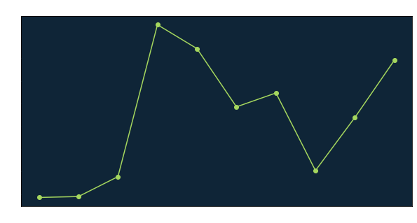
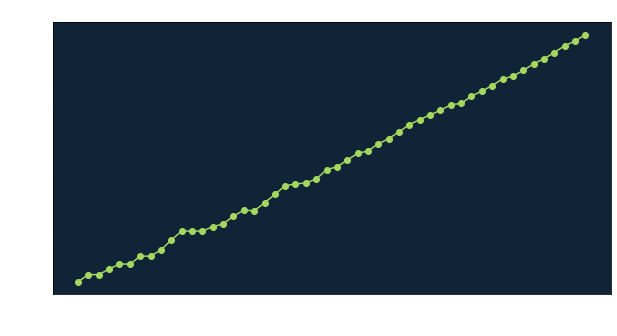

Let’s see if we can sample this directly using a hierarchical representation.
Published
June 15, 2022
The goal of this post is to write some code that can generate direct1 samples from a Cauchy Markov Random Field (CMRF) [1][2] on a 2D regular lattice. A more general Markov Random Field (MRF) is just a (multivariate) probability distribution possessing a special conditional-independence property amongst the components. This property permits the use of efficient numerical methods developed to exploit this property. CMRFs are cousins of the better-known Gaussian Markov Random Fields (GMRFs), which are themselves special cases of Gaussian Random Fields (a.k.a. Gaussian Processes).
Our main reference for this post will be [3], which is a comprehensive text on the subject. Our plan of attack is to:
sample from a 1D GMRF,
build off this to sample a 1D CMRF using a hierarchical representation of the Cauchy distribution,
sample from a 2D GMRF,
build off this to sample from a 2D CMRF (our goal).
Gaussian Markov Random Fields
A GMRF can be thought of as simply a multivariate random variable
\[
X \sim \mathcal{N}\left( \mu, Q^{-1} \right)
\]
with mean vector \(\mu\) and precision2\(Q\), where \(Q\) is a sparse banded matrix3 The reason we care about the sparsity of \(Q\) rather than the covariance \(\Sigma\) is because the precision matrix encodes the conditional independence structure of the field, whereas the covariance matrix will be dense even if the precision is sparse.
Code
import numpy as npimport scipy.sparse as spimport matplotlib.pyplot as pltplt.rcParams['axes.facecolor'] ='#0F2537'plt.rcParams['text.color'] ='white'plt.rcParams['axes.labelcolor'] ='white'plt.rcParams['xtick.color'] ='white'plt.rcParams['ytick.color'] ='white'prec_mat =2*sp.eye(10)prec_mat.setdiag(-1,k=-1)prec_mat.setdiag(-1,k=1)prec_mat = prec_mat.toarray()cov_mat = np.linalg.inv(prec_mat)fig, axs = plt.subplots(1, 2, figsize=(10,5))axs[0].imshow(prec_mat, cmap='Greens_r')axs[0].set_title("Precision")axs[1].imshow(cov_mat, cmap='Greens_r')axs[1].set_title("Covariance")plt.show()
Figure 1: A sparse precision matrix will generally invert to a dense covariance matrix.
The unnormalized density function for the GMRF is given as
\[
\pi(x) \propto \exp\left[ - \frac{1}{2} \left( x - \mu \right)^T Q \left( x - \mu \right) \right].
\]
Sampling a 1D GMRF
We might be tempted to sample a GMRF naively with the typical method, which is to multiply a standard normal vector by the Cholesky factor \(L\) in the cholesky decomposition \(Sigma = L L^T\) and then add the mean. In terms of the precision, this is equivalent to instead computing the Cholesky factorization \(Q = L L^T\) and computing
\[
x = \mu + L^{}
\]
Consider the GMRF with zero mean and precision \(Q = D^T D\), where
Intuitively, this precision corresponds to a Gaussian random-walk on the line whose increments have distribution \(\Delta x_i \sim \mathcal{N}(0,1)\) and initial value has distribution \(x_0 \sim \mathcal{N}(0,1)\). Let’s draw a sample from this.
Figure 2: Precision and covariance matrices for the random walk.
Code
chol_fac = np.linalg.cholesky(cov_mat)z = np.random.normal(size=N)sample = chol_fac @ zfig, axs = plt.subplots(figsize=(10,5))axs.plot(sample, "o-", color="#A5D75E")axs.set_title("A single draw from the random walk on the line")plt.show()

Figure 3: A single draw from the random-walk GMRF.
These examples with the number of points \(N = 10\) worked fine. Now let’s do a naive experiment, where we time how long it takes to compute a single sample as we increase \(N\).
Code
import timefrom sklearn import datasets, linear_modelns = np.logspace(2.5, 4, num=50)ns = np.rint(ns).astype(np.int32)def draw_single_sample(n):"""Draws a single sample from the RW model of size n. """ d_mat = sp.eye(n) d_mat.setdiag(-1,k=-1) prec_mat = d_mat.T @ d_mat prec_mat = prec_mat.toarray() cov_mat = np.linalg.inv(prec_mat) chol_fac = np.linalg.cholesky(cov_mat) z = np.random.normal(size=n) sample = chol_fac @ zreturnNoneimport timetimes = []for n in ns: start = time.time() draw_single_sample(n) end = time.time() elapsed = end - start times.append(elapsed)regr = linear_model.LinearRegression()regr.fit(np.log(ns)[:, None], np.log(times)[:, None])slope = regr.coef_[0][0]fig, axs = plt.subplots(figsize=(10,5))axs.loglog(ns, times, "o-", color="#A5D75E")axs.set_xlabel("N")axs.set_ylabel("Time (seconds)")axs.set_title(f"Time to generate one sample, increasing N (slope = {slope:.1f})")plt.show()

Figure 4: Time to generate a single sample vs. number of points N.
The bottleneck we see here comes from the choles
Code
import numpy as npimport matplotlib.pyplot as pltimport scipy.sparse as sp